Merto Gaming: Kids Games 2D
10 mini games, a garage and the Parents' Corner
Ages 3–7 · iPhone · iPad · Android


No ads · No in-app purchases · No data collection
Merto Gaming games are designed for young children: big buttons, colourful art and cheerful music make them easy to play, even for little ones who can't read yet. The games are in English and Turkish and follow the device language.
10 mini games, a garage and the Parents' Corner
Ages 3–7 · iPhone · iPad · Android
From racing to farming, from dinosaurs to memory cards: 10 mini games in one app. The stars earned in every game decorate the vehicles in the garage, and the game wheel (🎮) switches to another game at any moment.
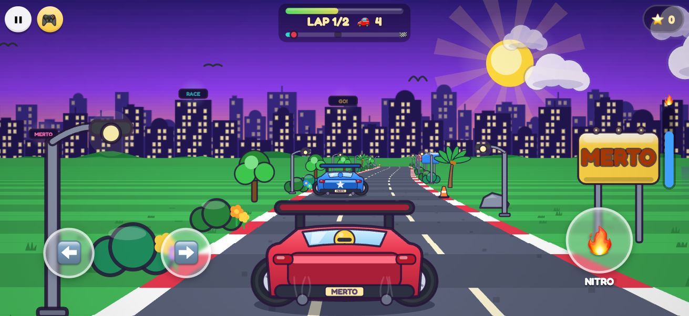
Race your rivals through city bends, over hills and through tunnels. Fire up the nitro, take the lead and be first across the line!
Controls: ⬅️ ➡️ steer · 🔥 NITRO
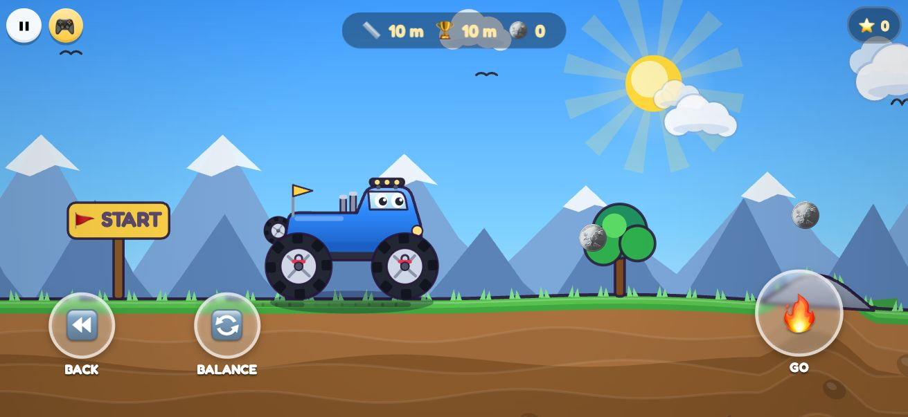
Bounce a monster truck with springy suspension over rocks, a canyon and a snowy peak. Keep your balance so you don't tip over, and grab the gold coins.
Controls: ⏪ BACK · 🔄 BALANCE · 🔥 GO
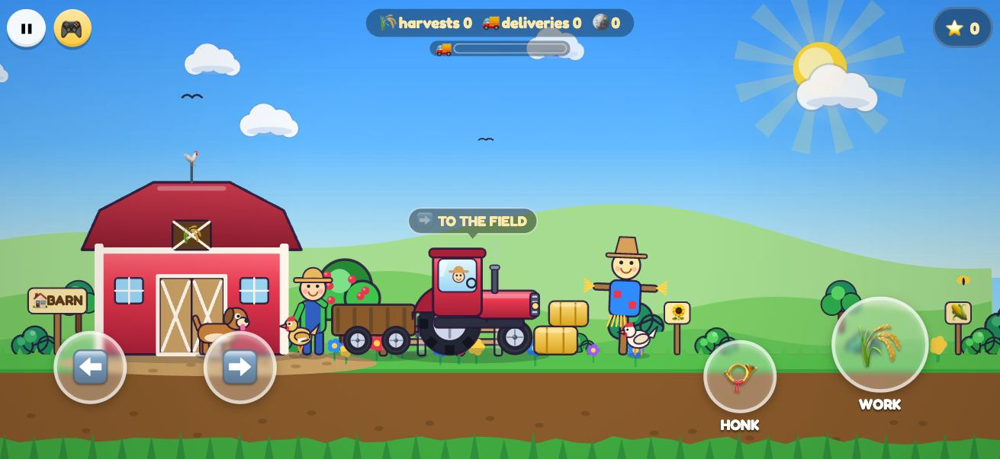
Plough the field, sow the seeds, water them and bring in the harvest, then haul it to the barn with the trailer. The chickens scatter and the cow says "moo".
Controls: ⬅️ ➡️ drive · 🌾 WORK · 📯 HONK
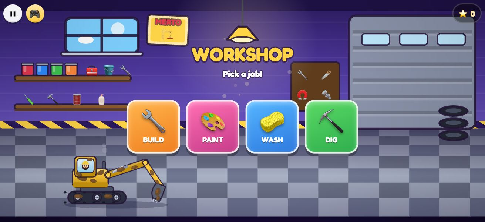
A four-part digger workshop: drag the parts to build your excavator, paint it piece by piece and add stickers, wash it with a sponge and a hose, then dig, find treasure and load the truck.
Controls: drag · ⬅️ ➡️ · 🔼 ARM · 🔽 DIG · 🪣 DUMP
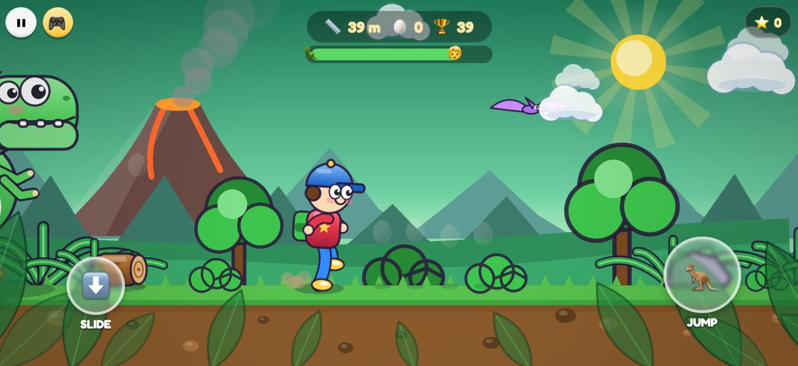
A friendly T-Rex is on your tail! Jump, slide and collect the eggs. If it catches you, it tickles you.
Controls: 🦘 JUMP · ⬇️ SLIDE
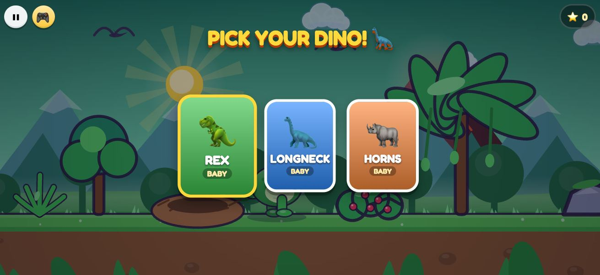
Pick your own dinosaur, walk, roar, feed it leaves and watch it grow. Carry the eggs back to the nest while day turns into night.
Controls: ◀ ▶ · ⬆️ JUMP · 📣 ROAR · 🍃 EAT
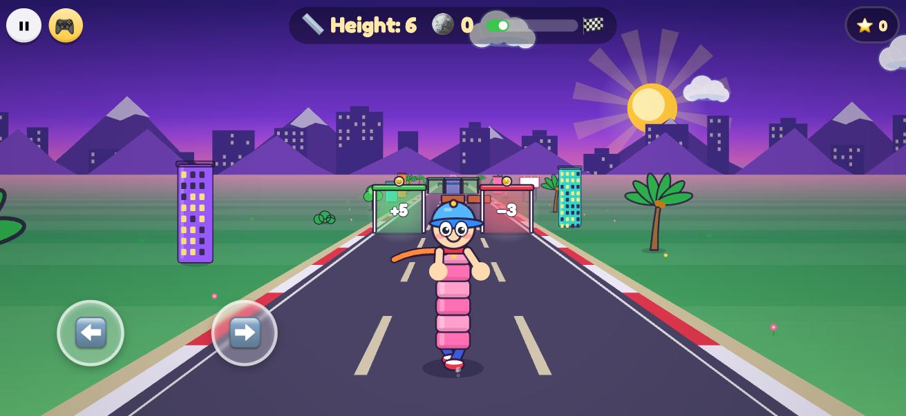
Pick the right gates on a three-lane road: plus gates make you taller, minus gates shorter. Grow huge, smash the walls and beat the giant at the end.
Controls: drag · ⬅️ ➡️
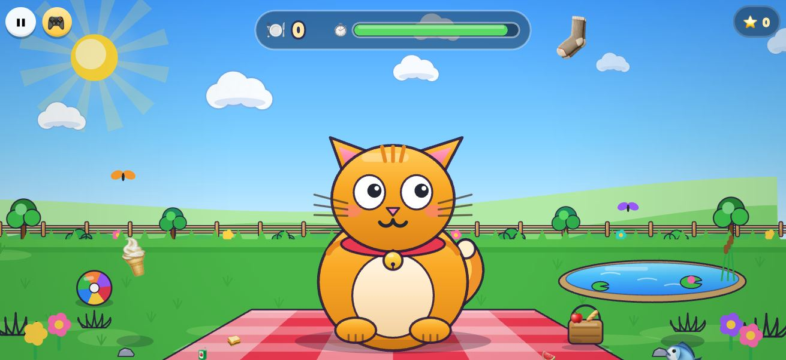
Help the cat catch the food falling from the sky, but dodge the broccoli! Laugh at its funny faces.
Controls: drag the cat
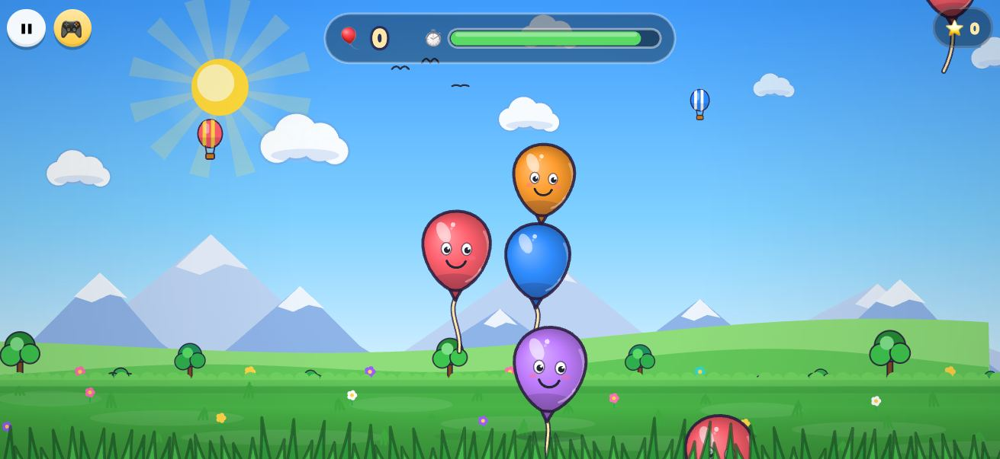
Tap the colourful balloons to pop them! Golden balloons hide stars.
Controls: tap
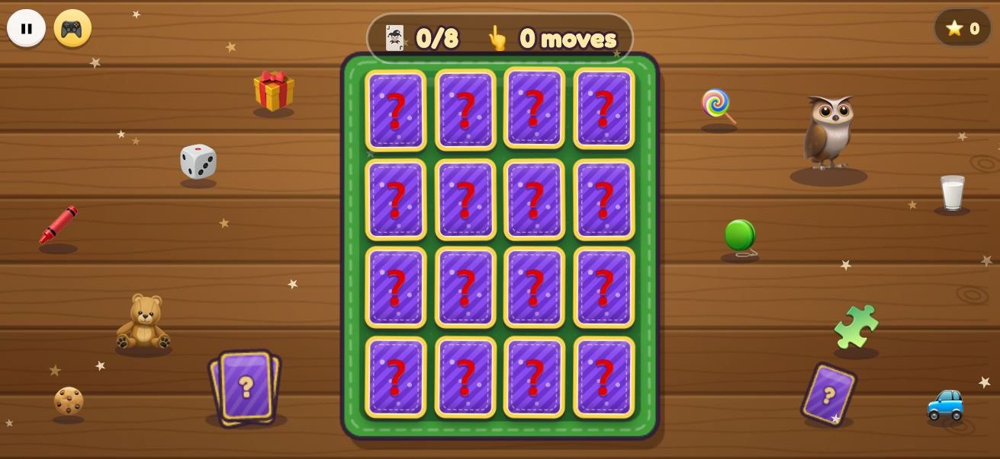
Flip the vehicle cards, find the pairs and train your memory. If a photo was added in the Parents' Corner, one card shows your child's face.
Controls: tap the cards
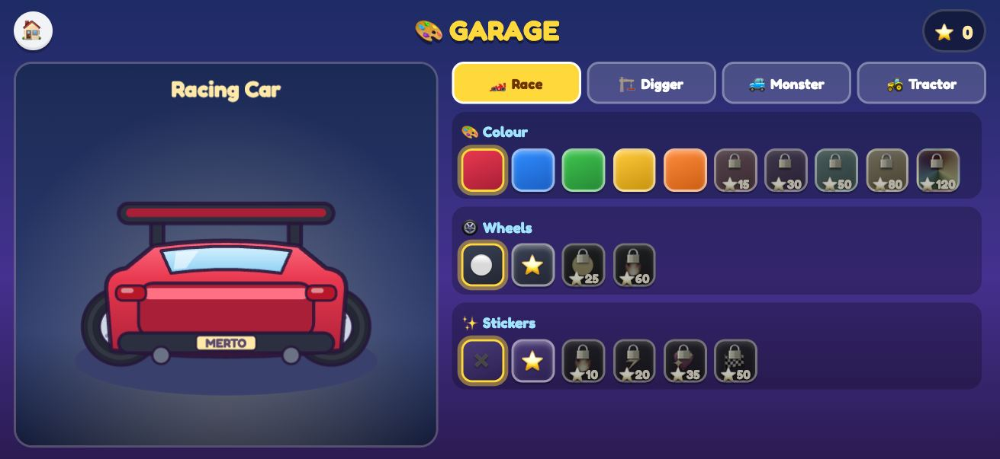
Use the stars you earn in the games to paint and decorate your car, digger and truck.
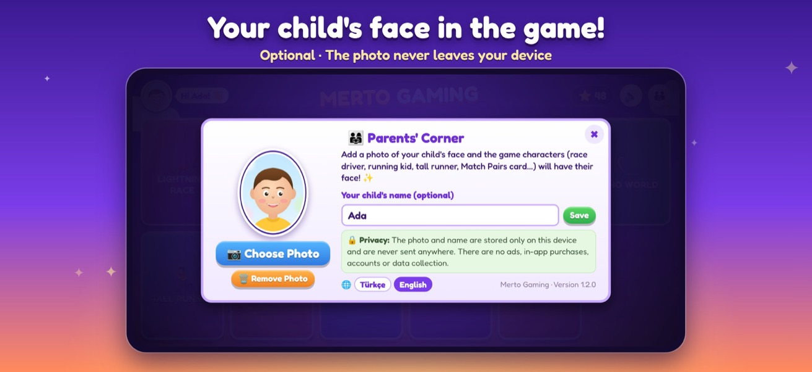
Optional: add your child's photo and the race driver, the tall runner, the running kid and a memory card will have their face. Enter their name to be greeted on the menu.
Real-time shadows, a physics engine and diggable ground: blocks really topple and the dirt really gets dug up. The main menu is a spinning platform on a floating island with the vehicle of the selected game; spin it with your finger while the sky changes to the game's time of day.
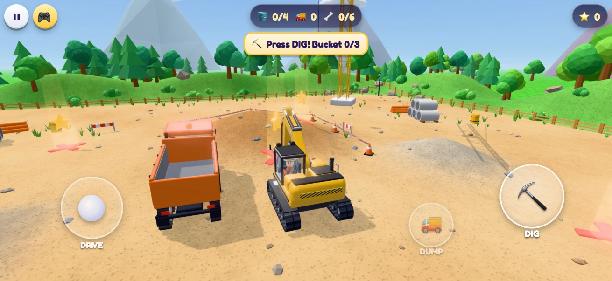
Drive a tracked excavator around the building site. The ground really gets dug up: fill the dump truck and dig up dinosaur bones, treasure chests and fossil eggs under the glowing X marks.
Controls: joystick to drive · ⛏️ DIG · 🚚 DUMP
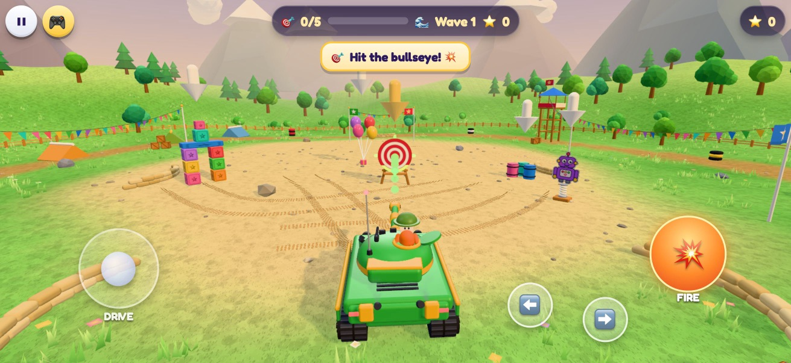
Wave after wave of targets on a training ground for a toy tank: block towers that topple with real physics, balloons, cardboard robots, barrels and a gong. Auto-aim helps little ones.
Controls: joystick · ⬅️ ➡️ turret · 💥 FIRE
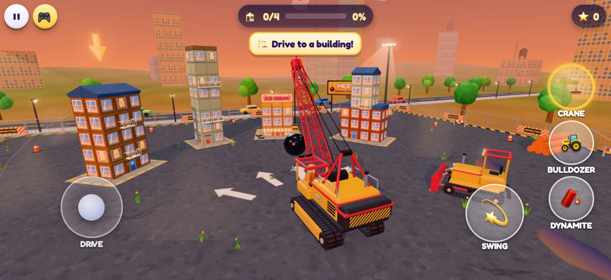
Knock down buildings made brick by brick with a wrecking ball crane, a bulldozer and colourful dynamite, with dust clouds and a demolition progress bar.
Controls: joystick · 💫 SWING · 🏗️ / 🚜 / 🧨 pick a vehicle
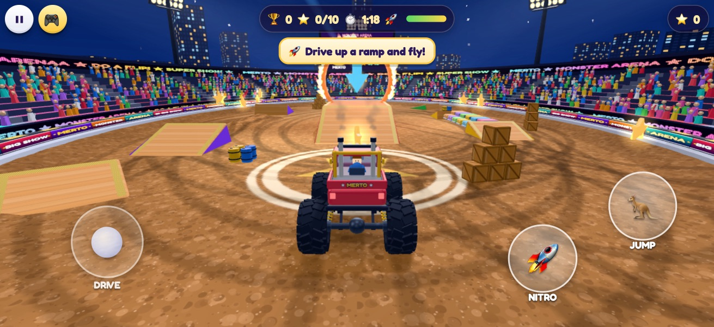
Under floodlights and cheering crowds in a night-time stadium, fly off ramps, jump through fire rings, crush junk cars and do flips, with fireworks at the end!
Controls: joystick · 🚀 NITRO · 🦘 JUMP
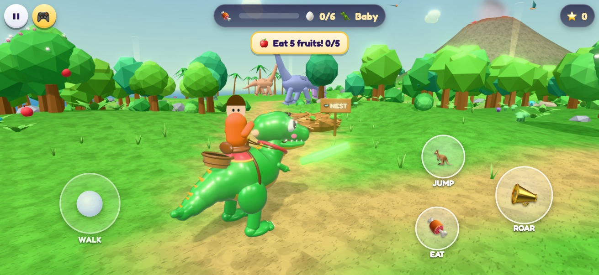
Ride your friendly T-Rex around a tropical island: roar, eat fruit and grow (Baby → Young → Giant). Bring the six hidden eggs back to the nest and the babies will follow you; day, night and a volcano.
Controls: joystick to walk · 📣 ROAR · 🦘 JUMP · 🍖 EAT
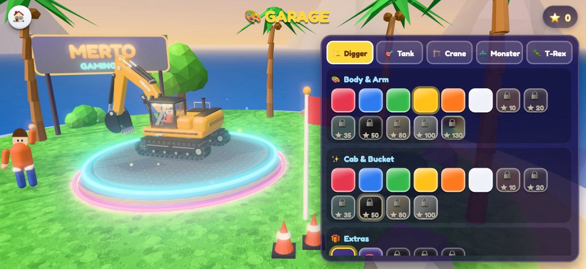
Main colour, detail colour and decorations for the digger, tank, crane, monster truck and T-Rex: a beacon, flags, LEDs, a crown, a disco wrecking ball, flame stickers, sunglasses… Gold, chrome and rainbow paint unlock with stars.
Details: Privacy Policy · Support and FAQ